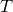
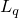
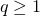
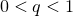

|
Software packages
Stochastic inertial-accelerated methods with delayed derivatives
On solving weakly-convex stochastic optimization in a distributed setting, we propose a stochastic inertial-accelerated method, which can have guaranteed convergence even outdated derivative information is used during the update. The information delay can slow down the convergence speed, but the effect will diminish with the number of updates for composite smooth problems. Empirically, the inertial acceleration can significantly speed up the convergence, as compared to a non-accelerated counterpart. Moreover, the asynchronous update can yield significantly higher parallelization speedup than the synchronous counterpart.
APAM: asynchronous parallel adaptive stochastic gradient method
We propose APAM, an asynchronous parallel adaptive stochastic gradient method, for solving stochastic optimization problems. Adaptive stochastic gradient methods (e.g., Adam, AMSGrad) have been extensively used in training deep learning models. They often have significantly faster convergence than a non-adaptive method. By asynchronous parallel computing, APAM can achieve near-linear speed-up on top of the already-fast-convergent adaptive method.
ADMM for quadratic assignment problem (QAP)
By a lifting technique, we obtain a tightest convex relaxation of QAP among all relaxed problems that use quadratic constraints. On solving the lifted SDP relaxation, we first use a facial reduction technique to remove redundant constraints and then apply the alternating direction method of multipliers (ADMM). On two classes of QAP benchmark data sets, our method can consistently give tighter lower bounds than state-of-the-art methods and can sometimes reach the optimal value.
ARock: asynchronous parallel coordinate updates
We propose ARock, an asynchronous parallel coordinate update method, for finding a fixed point of an operator . Compared to the synchronous parallel counterpart, ARock does not perform synchronization among all nodes after one update, and thus it can eliminate idle waiting time that is incurred by synchronization and load imbalance. ARock can enjoy the same convergence guarantee as its synchronous counterpart but yield much better parallelization speed-up.
Tensor completion by parallel matrix factorization
Dictionary learning and patch-dictionary method for whole-image recovery
We propose a new dictionary learning method by the accelerated alternating proximal gradient method. By using a given (analytic or learned) dictionary, we sparse-code each image patch and represent the whole image by paving all non-overlapping patches. This way, we propose to recover a whole image from its global measurements by using a patch-size dictionary. Through a few recoveries from different partitions, we eliminate the “stitching” effect. Our method can obtain more faithful recovery and is more efficient than state-of-the-art methods.
Matrix/tensor factorization by block coordinate update methods
We propose a block coordinate update method with three different update schemes: block minimization, block proximal point, and block proximal gradient. A unified convergence analysis is provided to three different schemes. A subsequence convergence result is shown first, and a whole-sequence convergence result is then established for problems that satisfy the Kurdyka-Lojasiewicz property. Our method has been applied to matrix factorization, CP and Tucker tensor factorization with or without non-negativity constraints, and dictionary learning problems.
Learning circulant kernels
We propose to learn a circulant sensing matrix by minimizing its mutual coherence with a given (analytic or learned) dictionary. With the learned sensing matrix, the recovery quality of a signal or image can be significantly improved, as compared to a random sensing matrix. Also, we propose to learn a circulant sensing matrix together with a dictionary to further improve the recovery.
Iterative reweighted Least Squares
We propose an iterative reweighted least squares method for solving unconstrained  minimization to recover a sparse vector and a low-rank matrix. Every iteration, our method smoothes the regularization term and then solves an equation formed from the first-order optimality condition. As the smooth parameter approaches to zero, the smoothed term becomes the term. When , the model is convex, our method can guarantee to find an optimal solution, and when , the model is non-convex, our method can still guarantee convergence to a stationary point. Superlinear local convergence is also established. Numerical results demonstrate the superiority of our method over convex recovery methods and also a low-rank matrix factorization method.
Citation: M. Lai, Y. Xu and W. Yin. Improved iteratively reweighted least squares for unconstrained smoothed Lq minimization. SIAM Journal on Numerical Analysis, 51(2), pp. 927–957, 2013.
Matrix completion with nonnegative factors
We propose a novel model of nonnegative matrix completion through performing nonnegative matrix factorization (NMF) from partial observations of a nonnegative matrix. The model builds on the NMF and the low-rank matrix completion. We apply the alternating direction method of multipliers (ADMM) to solve the model. Despite non-convexity, ADMM enjoys nice convergence and also performs well numerically. By utilizing the non-negativity property of the underlying matrix, our method can consistently perform better than a low-rank matrix completion method that does not enforce the non-negativity constraint.
Citation: Y. Xu, W. Yin, Z. Wen, and Y. Zhang. An alternating direction algorithm for matrix completion with nonnegative factors. Frontiers of Mathematics in China, 7(2), 365–384, 2012.
|